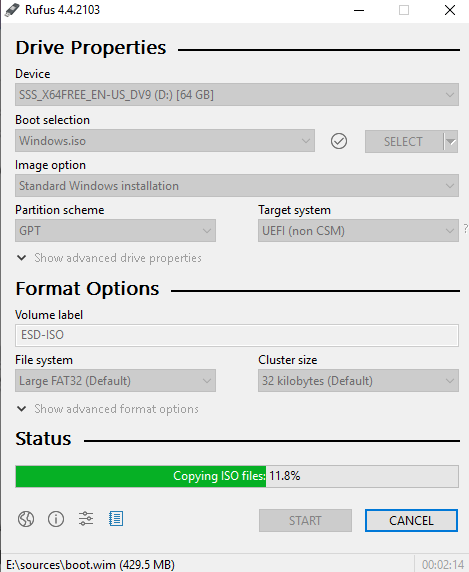
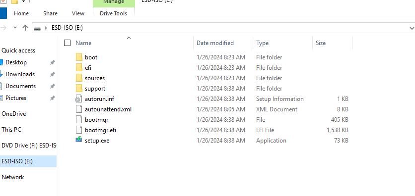
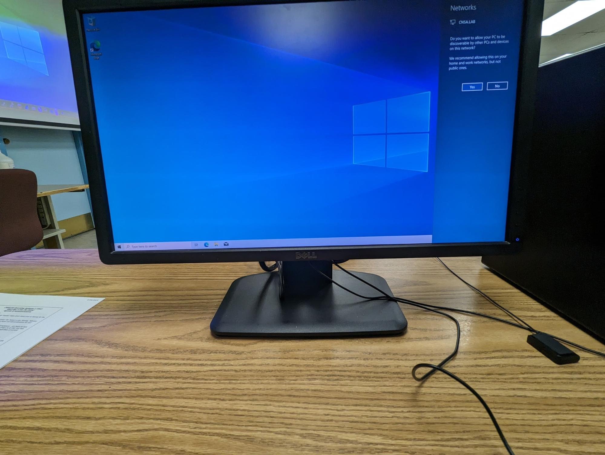
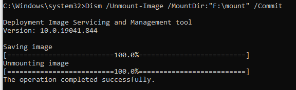
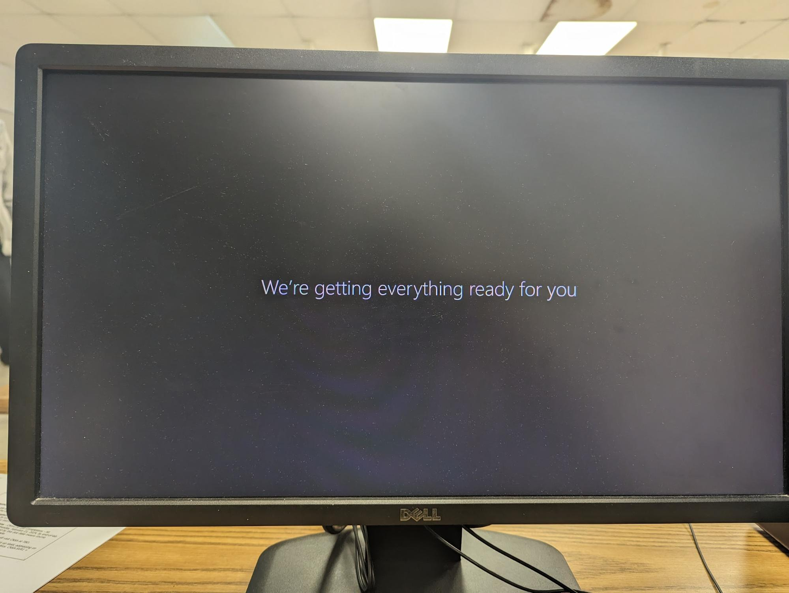

Introduction to Windows Answer Files
Using answer files allows for an efficient, automated Windows installation, reducing manual steps and ensuring consistency. Here, we’ll look at two scenarios: automating a basic Windows 10 installation and a more complex imaging and cloning setup.
Scenario 1: Basic Windows 10 Installation Automation
This scenario involves creating an answer file to automate the standard installation of Windows 10 from a USB drive.
- Create the Answer File: Use Windows Answer File Generator to generate your custom answer file.
- Prepare a Bootable USB: Download the Windows 10 ISO file and burn it to a USB drive.
- Place the Answer File on the Drive: Add the answer file to the root of the USB drive.
- Begin Automated Installation: Boot the target PC from the USB to start the automated installation process.
Fig 1: Using Windows Answer File Generator
Fig 2: Creating Windows 10 ISO
Fig 3: Burning ISO to USB Drive
Fig 4: Adding Answer File to USB Drive
Fig 5: Automated Windows Installation Process
Fig 6: Booting into Windows for Automated Installation
Scenario 2: Advanced Imaging and Cloning Automation
This advanced scenario involves using an answer file to automate the imaging and cloning process, along with detailed disk partitioning commands.
- Mount the Windows Image: Prepare the image by mounting it to customize.
- Place the Answer File: Copy the answer file into the
Windows/Pantherfolder of the mounted image. - Execute Partitioning Commands: Use commands such as
diskpartto set up partitions and format them.- Select disk 0 and clean
- Create EFI, MSR, and primary partitions
- Format as
fat32orntfsas required - Set up a recovery partition and apply attributes
- Apply the Windows Image: Use
Dismcommands to apply the Windows image.
Fig 7: Mounting the Windows Image
Fig 8: Unmounting the Windows Image
Partition Commands Used
Below are the primary commands used to manage disk partitions and prepare the system for imaging:
select disk 0cleanconvert gptcreate partition efi size=100format quick fs=fat32 label="System"assign letter="S"create partition msr size=16create partition primaryshrink minimum=500format quick fs=ntfs label="Windows"assign letter="W"create partition primaryformat quick fs=ntfs label="Recovery"assign letter="R"set id="de94bba4-06d1-4d40-a16a-bfd50179d6ac"gpt attributes=0x8000000000000001
Fig 9: Partitioning Disk Setup
Applying the Windows Image
After setting up partitions, apply the Windows image using Dism and run system checks.
Dism /apply-image /imagefile: "z:\HGW00025.wim" /index:1 /applydir:w:\sfc /scannowto verify system integrity
Fig 10: Applying the Windows Image
Fig 11: System Verification with sfc /scannow